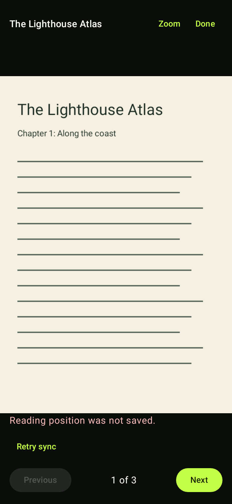

Android reader feedback
18 populated component captures. Loading follows actual page availability. Save failures retain the page with readable feedback. Robolectric API 35 native graphics; no device or live API claim.
Verification report · Revision and artifact hashes
Save warning: before and after
Before: page behind warning
After: 11.42:1 rendered contrast